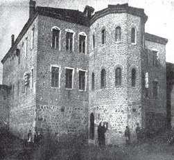
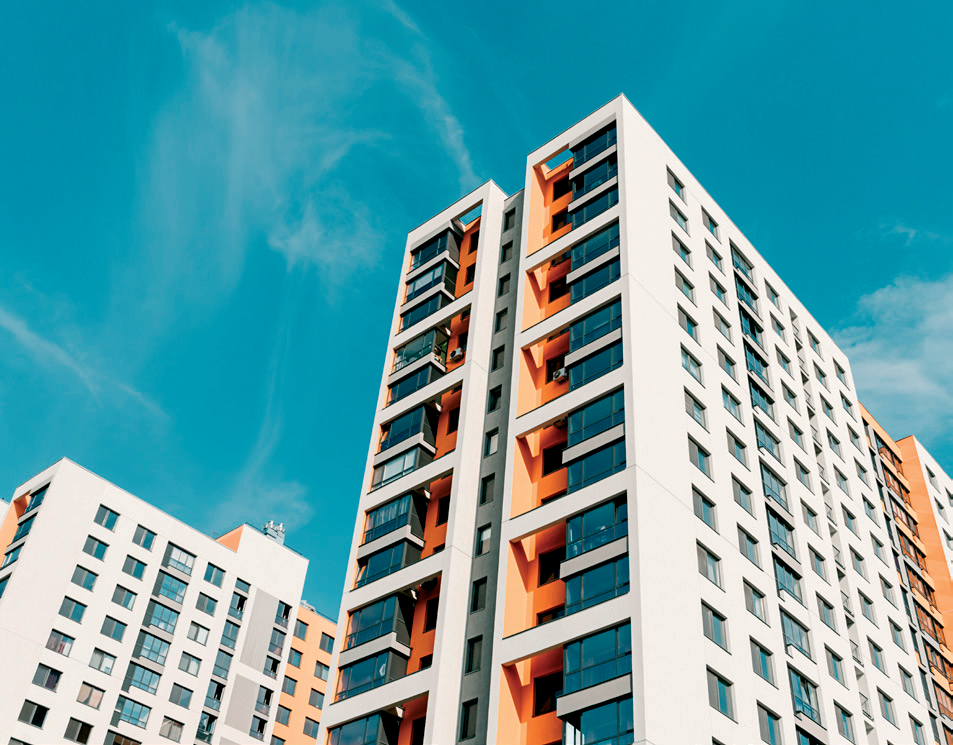
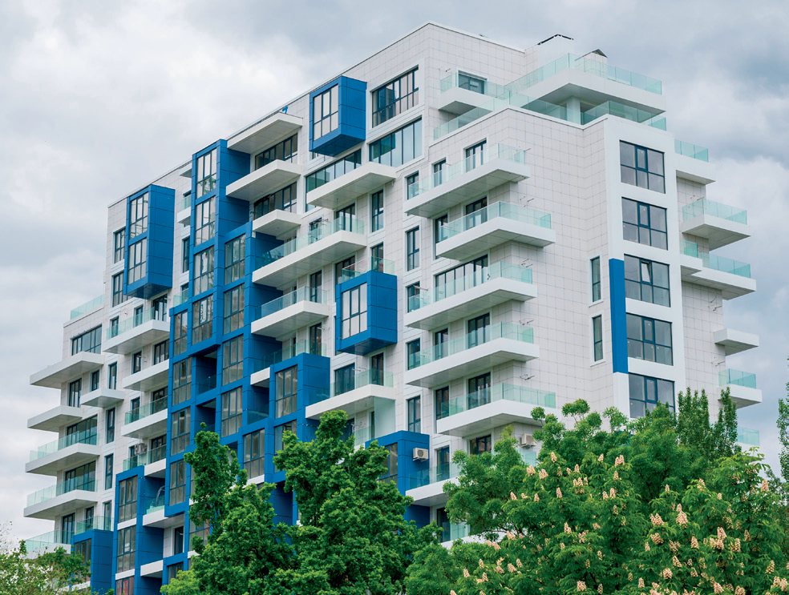
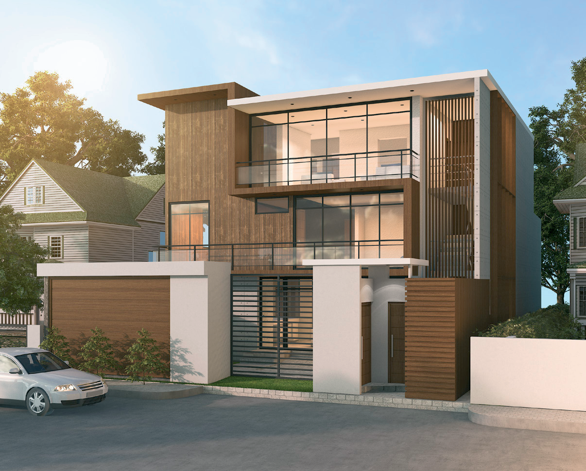

Kulla e gurit është një ndërtesë e vogël dhe e veçantë si një kështjellë. Ajo ka themele dhe mure shumë të forta. Dritaret dhe dyert janë të vogla dhe kanë formë të lakuar në pjesën e sipërme. Kullat dallohen nga muret shumë të trasha. Ato janë ndërtuar për të jetuar brenda dhe për t’u mbrojtur nga sulmet e ndryshme.


Sot, ndërtesat janë shumëkatëshe dhe të ndërtuara sipas arkitekturës moderne. Ato karakterizohen nga izolimi (që i mbron nga të ftohtët dhe të nxehtët), oborret dhe hapësirat e gjelbëruara përpara etj.

Një shtëpi moderne
26